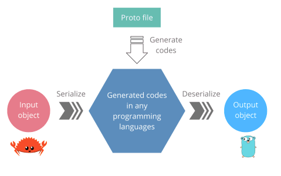

gRPC
Short History
gRPC - History
- successor to Google's internal framework "stubby"
- developed by Google and Square
- Version 1.0 (first stable) released on August 23, 2016
- now at version 1.33
- project joined CNCF (Cloud Native Computing Foundation) on March 1, 2017
In a nutshell
-
Remote Procedure Call
- execute a procedure of another program located in other machine
- without the developer explicitly coding the details for the remote interaction
- The client and server codes can be written in different languages
- describe services and exchanges messages using an IDL (Interface Description Language)
- gRPC uses proto3 syntax as IDL
- protocol buffers: serialization (binary) format
- generate source code (in multiple languages) based on IDL
- server side: implement generated interfaces
- client side: use stubs to call services
Benefits: efficiency
-
protobuf binary format - compared to JSON:
- smaller messages
- fast transportation and fast deserialization
- deserialization requires less CPU power (than parsing)
-
HTTP/2 based transport
- connection multiplexing, bi-directional streaming
- header compression
Benefits: usability
- declarative service description via IDL
-
code generation
- no need to write boiler-plate code
- no more misspelled field names or wrong types (type-safety FTW!)
- easier to work with new/unknown APIs: use your IDEs auto-completion to explore methods
- good support for versioning and evolving services
How gRPC Works
- Client has a stub that provides the same methods as the server
- The stub calls gRPC framework under the hood to exchange the information over network
- Client and Server use stubs to interact with each other, so they only need to implement their core service logic

The image source from: https://grpc.io/docs/what-is-grpc/introduction/
How stubs are generated?
-
API contracts description
- The services and payload messages are defined using Protocol Buffer.
syntax = "proto3"
message HelloRequest {
string name = 1;
}
message HelloResponse {
string greet = 1;
}
rpc WelcomeService {
rpc Hello(HelloRequest) returns (HelloResponse)
}
Cont...
-
Server and Client stubs are generated by the
- Protocol Buffer compiler
- gRPC plugins of each languages
// welcome.rs
// ...
pub struct HelloRequest {
pub name: ::std::string::String,
}
pub struct HelloResponse {
pub greet: ::std::string::String,
}
pub struct WelcomeServiceClient {
client: ::grpcio::Client
}
pub trait WelcomeService {
fn hello(&mut self, req: HelloRequest, sink: ::grpcio::UnarySink)
}
// ...
syntax = "proto3"
message HelloRequest {
string name = 1;
}
message HelloResponse {
string greet = 1;
}
rpc WelcomeService {
rpc Hello(HelloRequest) returns (HelloResponse)
}
// welcome.go
// ...
type HelloRequest struct {
Name: string
}
type HelloResponse struct {
Greet:string,
}
type WelcomeServiceClient interface {
Hello(*HelloRequest) (*HelloResponse, error)
}
type WelcomeServiceServer interface{
Hello(*HelloRequest) (*HelloResponse, error)
}
// ...
Why gRPC uses Protocol Buffer?
- Human readable interface defenition language (IDL)
- Programming language interoperable
- Code generators for many languages
- Binary data representation
- Smaller Size
- Faster to transport
- More efficient to serialize / deserialize
- Strongly typed contract
- Conventions for API evolution
- Backward & Forward compatibility
- Alternative options

What languages are supported by gRPC?
- 10 officially supported languages
- Pure implementation: Go, Java, NodeJS
- Wrap C-gRPC core: C/C++, C#, Objective-C, Python, Ruby, PHP, Dart
- Many other unofficial libraries: Swift, Rust,Typescript, Haskel, etc.
What makes gRPC Efficient?
gRPC uses HTTP/2 as its transfer protocol
-
Binary framing
- More performant and robust
- Lighter to transport, safer to decode
- Great combination with Protocol Buffer
- Header compression using HPACK
- Reduce overhead and improve performance
- Multiplexing
- Send multiple requests and responses in parallel
- over a single TCP connection
- Reduce latency and improve network utilization
- Server push
- One client request, multiple responses
- Reduce round-trip latency
HTTP/2 Demo
How HTTP/2 works under the hood
- Single TCP connection carries multiple bidirectional streams
- Each stream has a unique ID and carries multiple bidirectional messages
- Each message(Request/Response) is broken down into multiple binary frames.
- Frame is the smallest that carries different types of data: HEADERS, SETTINGS, PRIORITY, DATA, etc.
- Frames from different streams are interleaved and then reassembled on the other side
HTTP/2 vs HTTP/1.1
- First, HTTP/2 is a binary protocol, while HTTP/1.1 is a text protocol.
- Headers are compressed in HTTP/2, while it’s plain text in HTTP/1.1
- HTTP/2 allows multiplexing, HTTP/1.1 doesn’t
- We can send multiple requests and responses in a single connection in HTTP/2, while in HTTP/1.1 we can send only 1, which means that we must create multiple TCP connections to send multiple requests.
- Server-push is possible with HTTP/2, but not in HTTP/1.1
- HTTP/2 was released recently in 2015, while HTTP/1.1 was released in 1997.
Where gRPC is well suited to?
-
Microservices
- Low latency and high throughput communication
- Strong API contract
-
Polyglot environments
- Code generation out of the box for many languages
- point-to-point realtime communication
- Excellent support for bidirectional streaming
-
Network constrained environments
- Lightweight message format